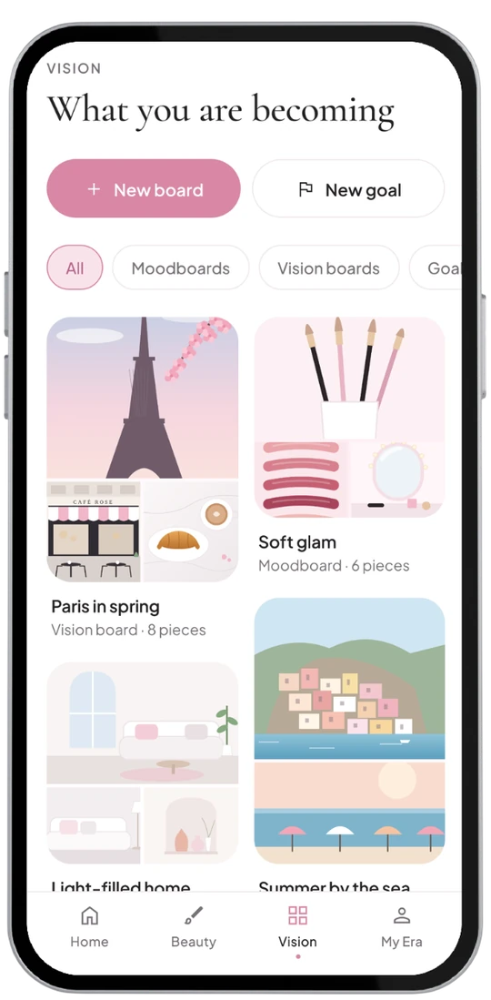

Name the mood
Give your board a name that sets the tone: "Pink pastry café", "Riviera summer", "Quiet evenings". A good name helps you notice when an image does not belong.
Build a palette first
Choose four or five colours: one main shade, one or two supporting tones, a neutral and a small accent. Pull colours from an image you love. A clear palette is what makes a moodboard look cohesive instead of random.

Mix images, textures and objects
Combine wide scenes with close-up details: a fabric, a lipstick swatch, a ceramic cup, a flower. Textures add depth and make the board feel real.
Add a few words
Moodboards are mostly visual, but a line of text anchors the feeling. Choose three adjectives or a short phrase and place it where your eye lands.
Use the board to decide
The real value of a moodboard comes later: when you are choosing a blush, a cushion or a coat, ask whether it belongs on the board. In SOVELLIQUE you can keep moodboards next to your vision boards and filter between them.

Try it in SOVELLIQUE
Collect an aesthetic, a palette, a feeling. Free to start on Android.